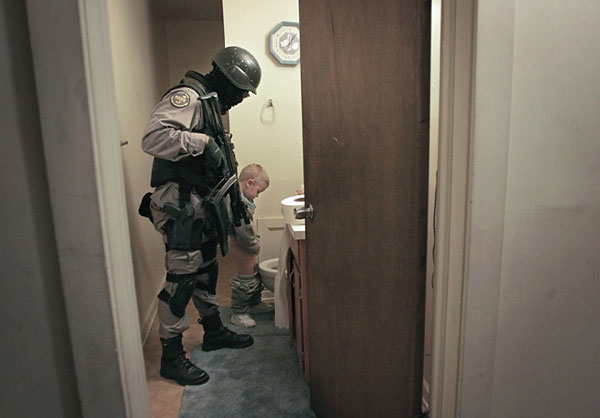

WolfesBlogArchives: December 2006
Sunday, December 31, 2006
YESTERDAY, MY 15TH DAY ON FOOT, I walked to town on a few errands. But not before spending absurd hours on the Internet. Reading news. Catching up on email. Checking blogs. Visiting TCF and witnessing an ugly situation there. Reading bad news; for some reason it was more depressing than usual that day. Much unnecessary suffering in the world. Suffering people. Suffering dogs. All suffering at the hands of governments.
By the time I left for town I was depressed and surly from the content of the Net experience. But equally I was physically stupified by the hours of hunching over the keyboard, peering into the monitor, bottling emotions and energies up in a rigid body.
It was a fine, crisp morning. Very cold and a little dangerous walking on the roads and sidewalks -- lots of ice, just beginning to melt off. I always like going to town. And it's downhill all the way. [more]
Posted by Claire @ 09:15 AM CST [Link]
Saturday, December 30, 2006
THE FIX IS IN ON WAYNE FINCHER, the man who dared to make a case for his uninfringed right to own militia weapons. So reports David Codrea.
Unfortunately, it's not new and not news these days for defendants to be told "Don't mention the Constitution or the Bill of Rights" in court. Which, of course, makes it all the worse, and all the more tyrannical.
Posted by Claire @ 10:34 AM CST [Link]
DOESN'T MATTER WHETHER THE NEWS IS NEW OR OLD. If it's of government, it manages to be depressing.
Cory Maye has lost his bid for a new trial. Incomprehensible.
How the paradise island of Diego Garcia officially became "uninhabited" via a naked conspiracy between the Brits and Americans. (Link courtesy of James Foye.) You may not want to read the story if you love either human beings or dogs.
Posted by Claire @ 09:47 AM CST [Link]
Friday, December 29, 2006
CELATA CASE IN THE NEWS. No new developments, but an interesting article on several counts.
Check this out:
Celata told a witness cooperating with government agents who were posing as buyers that people liked his products because they could get a gun without the government knowing about it.Celata also boasted about thwarting government officials on talk radio shows, according to court records.
Uh ... since when does that constitute evidence of a crime? Last I checked, getting an 80 percent kit and building a gun at home "without the government knowing" is perfectly legal. And thwarting government officials is not merely legal when said government officials violate the Bill of Rights, but a darned good idea.
Looks like the ATF and FBI just decided Celata was the one nail sticking up and they decided to pound him down.
Posted by Claire @ 07:38 PM CST [Link]
Thursday, December 28, 2006
WELL, NOW THIS IS WHAT A LIKE IN A BLOGISTA. Enthusiasm. Today, I pulled off a coup -- or rather it would be more accurate to say that Thunder, Debra, and I pulled off a successful conspiracy -- and persuaded Andrew Wiegand (aka penguinsscareme) to join the Wolfesblogistas.
I was idling along thinking of how to introduce him when he jumped right in and introduced himself. And posted useful information, besides.
If you enjoy the Claire Files Forums, you know Andrew as TCF's storyteller supreme. His tales of the adventures, sorrows, and joys of his family have figured prominently in Best of TCF compilations. He is
notorioushonored as the man who danced a rude driver into shame and who did ... well, something (I have never been quite sure what) to the entire city of Fresno, not to mention the space-time continuum.Many people have been trying to get Andrew to sit down and write "for serious." Well, Andrew. I don't care whether you write "for serious" or for fun. But I think I can speak for the whole Blogista crew when I saw we're glad to have you writing with us.
Posted by Claire @ 08:06 PM CST [Link]
Well hi! I'm the new kid in town. My given name is Andrew, but I'm better known as PSM around Claire, et al. You know, I could take this natural opportunity to describe myself, give some background, talk about my pleasures and peeves. But I'm like one of those jokes you know but can never tell right. So rather than mess up the punch line, I'll just, uh, I'll just...
Oh hey look, a fascinating story, right up ahead! [more]Posted by Penguinsscareme @ 07:35 PM CST [Link]
THE BUSH PLAN FOR WINNING IN IRAQ. Bingo. Ted Rall hits it spot on.
(Link courtesy of McBlog.)
Posted by Claire @ 12:26 PM CST [Link]
Wednesday, December 27, 2006
Field Test Report: Energizer 6-LED Headlamp and MagLite with 3 watt LED
Raving Reporter Thunder here
I figured I'd give you guys a preliminary report on a couple of the Christmas gifts that I received.
With the onset of colder weather, I've needed to beef up the insulation in my RV. With the shorter days of the season, I don't get home from work until after the sun sets. My mini flashlight that has 8 LEDs in its head was starting to wane on me as the battery was dying. Lightning's hand cranked flashlight was all that we had on hand and I was having a difficult time trying to figure out how to position the light so that I could work hands-free. I was eventually able to set the light up using the charging handle as a support, but it wasn't stable and definitely wasn't the optimum way to go. [more]
Posted by Thunder @ 07:19 PM CST [Link]
Sunday, December 24, 2006
INFANT DISCOVERED IN BARN. Child Protective Services launches probe.
And Merry Christmas to you, too. :-)
(Thanks and Froehliche Weihnachten (hope I got that right; high school German class was a long time ago) to Rick.)
Posted by Claire @ 02:27 PM CST [Link]
SPEAKING OF INSANE RELIANCE ON TECHNOLOGY (to the abandonment of all common sense), as I was last week, I present for your holiday cheer this hilarous story from Reuters: "Motorists Switch SatNav On, Brain Off."
The human race is doomed. Really it is. But we're going to provide each other with plenty of amusing folly as we out-lemming those mythically suicidal lemmings.
Posted by Claire @ 02:17 PM CST [Link]
Friday, December 22, 2006
HOPE YOU HAD A BRIGHT AND BLESSED SOLSTICE. And here's a nice little bit about solstice traditions through history.
Posted by Claire @ 11:48 AM CST [Link]
FIRST TRUCKLESS WEEK. Last Friday the faithful Toyota limped home with a blown head gasket. After receiving beaucoup good diagnostics from the chivalrous mechanics of TCF, I decided to mothball the truck for a while instead of getting it fixed right away.
Partly I'm weary from a string of the sort of expenses that don't improve life but merely keep it running in place. (You know those kind of expenses.) But also, since I don't have a job I must drive to, and since I live within a mile of a small town, I figured well, maybe I'll just try foot, bus, and eventually (if I can solve those downhilling problems and if the weather cooperates) 'bent trike & see how it goes.
It's now been a week -- and a mixed bag. [more]
Posted by Claire @ 10:23 AM CST [Link]
Thursday, December 21, 2006
GOOD ARTICLE ON SECESSIONISTS finding common ground despite vast political differences. Encouraging.
Posted by Claire @ 10:42 AM CST [Link]
IF BUSH REALLY THINKS WE SHOULD HAVE EVEN MORE SOLDIERS slaughtering and being slaughtered in Iraq, then let him be the first to volunteer to go. It's about time, after all.
Bizarre situation. An unpopular and inept leader wants to increase the scope of an unpopular war, over the objections of virtually all experienced military leaders, including those doing the fighting. That circumstance leads to military coups in some countries. A military coup would be a disaster, of course. Not advocating it and don't think it's even remotely in the picture here. But how much worse a disaster would it be than the Bushevik regime has already been?
Posted by Claire @ 10:10 AM CST [Link]
GREAT NEWS FOR READERS AND WRITERS. The Espresso will soon be delivering printed books on demand in less than 10 minutes.
The entire publishing and distribution system for books has been "broken" for a long time. Too much central control. Too many barriers between readers and writers (some of them quite outrageous -- though invisible to people outside of the industry). It was obvious that the e-world was eventually going to produce something to knock the big gatekeeping publishers and their handful of gatekeeping distributors out of the way. But when? And what? Could this be it -- a sort of ATM for books? Anyhow, it's a terrific idea. Hope it flies.
(Thanks to Simon Jester for the news.)
Posted by Claire @ 09:42 AM CST [Link]
Wednesday, December 20, 2006
A THOUGHT APROPOS OF I DON'T KNOW WHAT. I haven't had a long conversation in months that hasn't soon gotten down to politics. And in all those conversations, not once has anyone ever expressed the slightest thought favorable to George W. Bush -- unless you can accept "Well, his wife loves him" as positive. The people I talk with are all against the war, against torture, against Bush's shoddy backhanded methods of gun control, against his entire baboonery.
Now the interesting thing is that this isn't just because they're my friends, so of course they're at least libertarian-leaning. The people I'm thinking of I met in a variety of ways, not one of them political. They're friends from animal rescue, mostly. But also people I've met through their businesses, or their friends. So quite a wide variety, and generally pretty active, engaged social types, who you'd think would tend to be fairly liberal. A couple of them even work for government.
And they all think the government, at the federal level anyway, is not only evil, but laughable. It's a very, very, very, very, very bad joke being played on them.
Even more interesting, while some of these people would claim things were better under Clinton, virtually all also realize that the differences were only of small degree and cosmetic. Not all of them agree with me down to the bones, but even the most traditionally conservative recognize that the drug war doesn't work and the even the most liberal recognize that government social programs are ludicrously broken. And therefore, anybody who's actually close to one of these governmental problems and can't fix it is a person who by definition lacks brains or credibility. And therefore, the whole institution of government is rotten -- and ludicrous.
I think when ordinary life gets like this is when tyrants most need to tremble. We may still be at the do-nothing stage. But nobody, except a few who rely on it, consider the federal government to be a credible intellectual or political force. It's just ... a force. And they want to stay out of the way of it.
The problem will come, of course, when we no longer have that choice. And that's exactly the moment our government is aiming to provoke -- though the "Deciders," lacking brains or credibility, seem to think they'll be immune from the fate of tyrants, this time.
Posted by Claire @ 01:21 PM CST [Link]
OKAY, JUST AFTER I BLOGGED THAT LAST NEGATIVE the positive came wafting into my email box. These are the words of Shawnee Chief Tecumseh:
Live your life that the fear of death can never enter your heart.Trouble no one about his religion. Respect others in their views and demand that they respect yours.
Love your life, perfect your life, beautify all things in your life.
Seek to make your life long and of service to your people.
Prepare a noble death song for the day when you go over the great divide.
Always give a word or sign of salute when meeting or passing a friend, or even a stranger, if in a lonely place.
Show respect to all people, but grovel to none.
When you rise in the morning, give thanks for the light, for your life, for your strength. Give thanks for your food and for the joy of living. If you see no reason to give thanks, the fault lies in yourself.
Abuse no one and no thing, for abuse turns the wise ones to fools and robs the spirit of its vision.
When your time comes to die, be not like those whose hearts are filled with fear of death, so that when their time comes they weep and pray for a little more time to live their lives over again in a different way. Sing your death song, and die like a hero going home.
-- Tecumseh
(1768-1813) Shawnee Chief
Posted by Claire @ 10:56 AM CST [Link]
WITH HOLIDAYS UPON US I wanted to write something positive today. Really I did. I'll do my best to work myself up to some positives later.
But at this time of year it seems especially sad (though necessary) to be reminded that the "detain and torture" culture of the Busheviks is rotting the soul out of what's left of America. Today David Lindorff on Counterpunch confirms what I said yesterday -- that the "security" establishment is using torment and torture merely for its own private sadism. (I don't agree that "every one of us Americans" is guilty.) And Jim Bovard muses on the sham justice of Iraq with this conclusion:
Remember how Bush brags about having brought the “Rule of Law” to Iraq? Remember that Bush also brags about the “Rule of Law” in America.Rather than bringing American-style justice to Iraq, Bush is more likely to bring Iraqi-style justice to America. The Military Commissions Act is a harbinger of things to come.
Sometimes I feel it's beating a dead horse by blogging about Bushevik torture and destruction of due process. But it's absolutely necessary to halt this rot -- the rot of torture, endless "detention," and militarization of policing and prisons -- or nothing else will ever be okay with America. Everything else here, however superficially good, will be polluted by this.
Posted by Claire @ 10:42 AM CST [Link]
Tuesday, December 19, 2006
AMEN. Torture is destroying the nation's integrity -- destroying the souls of tortured and torturers alike.
What seems equally bad is that in many cases the torment (as in the case of an inert and vacant Jose Padilla being hauled to the prison dentist, blinded and shackled, by a squadron in riot gear) is simply a game. Like violent, military-style SWAT raids on harmless people, the military gear and tactics serve only to let cops and prison guards "play soldier" -- with their playtime sponsored by and serving the interests of tyrants. Not to mention that such games give free rein to the very worst traits of the individuals doing the "playing."
No surprise at all that paramilitary cops and prison guards like to give their gangs little-boy type names like "The Cowboys," "The Riders," or "The Rangers."
Posted by Claire @ 11:42 AM CST [Link]
WHEN MY FAITHFUL OLD TOYOTA TRUCK died last week, I got lots of helpful disgnostics from the chivalrous mechanics of The Claire Files forums. But in the end, I decided to park the truck rather than take on another unrewarding expense in a year that's already had too many of them.
I've been on foot since Friday, and this afternoon a friend is coming over to help me mothball the Toyota per instructions from the TCF crew.
It's not just the money; I've been considering a vehicle-less experiment for quite a while. I live within walking distance of most places I need to go -- library, post office, grocery store, and hardware store. Bus or pedal-power should take care of most of the rest (although the walk to the nearest bus stop is a long one). So we'll see. I expect to enjoy experiencing more of my surroundings than I'd notice from inside the truck. And I may learn something about relying on friends and neighbors for occasional favors, like trips to Costco for dog food or hauling heavy stuff up the hill in exchange for something homemade. I've always found it hard to lean on people and am not looking forward to that part of things. But maybe it's a lesson I need to learn, both the receiving and the repaying.
Worst come to worst, if I succeed in going truckless for four or five months, I'll save enough to put the beastie back on the road. I expect I'll have periodic reports on my experiment.
Posted by Claire @ 11:18 AM CST [Link]
THE MIND BOGGLES:
Reason: In 2002, the Libertarian Party called you the worst drug warrior in Congress. No hard feelings?Barr: To be honest with you that’s never come up in our discussions. I’m not going to let minor disagreements come between us.
Thus sayeth the newest member of the Libertarian Party national committee. The drug war constitutes nothing but a "minor disagreement" among political chums.
And this is no ordinary drug warrior, either. As Wendy McElroy notes, this is a man who, when he had lawmaking power, advocated using federal racketeering statutes to prosecute people who used their First Amendment-protected rights to work for drug policy reform!
In the rest of the Reason interview, Bob Barr doesn't even have to dodge the issue of how one of the nation's most ardent drug warriors can pretend to be a liberatarian -- because (in a series of questions as "soft" as those usually asked by the lapdog media to George W. Bush) the subject never comes up again.
But now he's all in favor of the Holy Constitution. Yeah, right.
Posted by Claire @ 10:46 AM CST [Link]
Sunday, December 17, 2006
I'M AIMING TO DRAW PORTRAITS of a friend's two little boys. The younger is one of those always-on-the-go kids who would once have been called "all boy." His sort would now be diagnosed as a disabled victim of ACD. To their credit, my tired friend and her husband reject the idea of "medicating him until he behaves like a girl." Instead, they give him ample outlets for his energies in scouting and sports and 4H.
I took photos of both boys last week to use as scrap for the portraits. As you can imagine, ACD-boy was hard to capture. And I'm a pretty awful photographer, besides. But one photograph came out bad in a very good way. It was just a blur of this little boy rushing past the camera.
I haven't yet achieved a likeness that a mother could love (which is why I feel free to post my preliminary drawings; they don't look a thing like him). But I've been having fun trying to capture the feeling of a little boy in motion. Take a look.
Here's the larger, or at least the click-to-enlarge version of the sketch above, which I just finished.
And here's the first sketch I did last weekend. It captures the sense of motion better, though it's a more labored drawing.
I'm not sure I'll ever get a likeness in this pose. The original photo is blurred beyond definition and I don't have the talent or experience yet to make up what I can't make out. Among other things I didn't feel I was capturing the right expression in his eyes and lips. You can see that in both these pictures his face is vacant. Part of that's just my level of ability. But as I kept peering at the source photo to try to fix my work I realized something.
Although he was in wild motion all the time I was trying to snap a picture of him, he was also, at this moment, staring at the TV set, checking in on his favorite pro football team. In real life he's cuter than either of these drawings, but he really did have that vast blank emptiness in his eyes. A little scary, actually.
I'll probably work from a more conventional photo for the mother-love version of his portrait. But this was an interesting experiment. I may play around a little more with getting the sense of motion. After going great guns all summer, these are the first drawings of any sort I've done since October.
Posted by Claire @ 05:59 PM CST [Link]
Saturday, December 16, 2006
IF YOU'RE A SUBSCRIBER TO THE 2ND AMENDMENT NEWS DIGEST or want to be, please read the following notice from Mary Lou Seymour. Seems a Yahoo accident wiped out the entire newsgroup and its subscriber list. Members will need to subscribe anew. Here's from ML:
[more]Posted by Claire @ 08:39 PM CST [Link]
WE GOT A BIG WHACK OF STORM THIS WEEK. Gusts of maybe 85. Roads carpeted with tree limbs. One townie got his painstakingly homemade fence blown down and skirts flew off of mobile homes. But nothing really out of winter's nastiest ordinary.
It was cool for me, 'cause I got to put aside my work when the power went out. I was well stocked with no-cook comfort foods. Raw, unsalted cashews (mmmmm). California dried apricots (thank you T.). And something just short of three lifetime supplies of newly arrived gourmet chocolates from my most persuasive publisher (and thank you too, RL). I made some comfort tea on my tiny Magic Heat stove. That hand-sized stove is one of the best purchases I ever made. If all you need is tea for two, hot chocolate for one, or ramen for heaven knows what reason, the Magic Heat is so much more friendly than cranking up the Coleman.
So I just took it easy and listened to the wind thump and howl. Ava the Hellhound, my one-year-old who is beauty and the beast all in one, got a lot more indoor tug and fetch than she's used to. And all was well.
But for some strange reason, all morning long before the storm hit, everybody -- and I mean everybody -- was going around town saying, "They're predicting a storm as strong as the Great Blizzard o' '48."
It's hard to explain what that conveys here. They weren't really saying 'Blizzard o' '48." But what they were saying has the same import locally as "another Katrina" would have to New Orleaneans. "The Big One" to Los Angelenos. "Another fire" to Chicagoans. And "The Columbus Day Storm" to folks in the Pacific Northwest. They were saying that was coming. The hell event. The one that could casually kill you just for standing in the wrong spot. Or living in the wrong spot. [more]
Posted by Claire @ 08:37 AM CST [Link]
WENDY MCELROY HAS AN INTERESTING PERSONAL TAKE on the latest and most idiotic "for the children" Internet proposal. You want babysitters, Mr. McCain?
My take is more like the one expressed by some folks on TCF. This proposal -- which would require every blog or bulletin board owner, however tiny, to report "bad" postings or pay fines up to $300,000 -- would be used almost exclusively to bust political opponents of whatever regime is in power. Have some hired thug toss an unsavory post on some innocent discussion board, then rush in to bust the owners. Doesn't matter who actually did what. Once you're accused of harboring kiddie porn, you're toast anyhow.
I really doubt that even our tech-ignorant congressthings will be dumb enough to pass this turkey turd, though.
Posted by Claire @ 08:17 AM CST [Link]
Friday, December 15, 2006
WHO NEEDS A PRESIDENT?
Take all the worst periods in American history—Vietnam, the Great Depression, Prohibition. In every case, without fail, we have had a president as the head of state. Who has signed every single bad bill into law? A president. What about the president who got us into the Civil War? He was a president through and through, just like the rest of the presidents. The truth is, you look at every major crisis, flu epidemic, and time of civil strife, and who has been sitting in the Oval Office? A damn president.I'm sorry, but these are just the simple facts. ...
They say that doing the same thing over and over and expecting a different result is the definition of insanity. Sounds an awful lot like what we're doing choosing presidents to serve out terms of office, run the federal government, and act as commander-in-chief of the armed forces, over and over and over and over again. We're just going through this charade because we think we have to, but we really don't. Last time I checked, my garbage was getting picked up every Tuesday and Thursday, I had fresh running water, and my telephone was working perfectly, all without the highest elected official in the land even raising a finger. This country practically runs itself!
Once again The Onion strikes closer to reality than the authentic media dare.
Posted by Claire @ 12:54 PM CST [Link]
I USUALLY MANAGE TO IGNORE LIBERTARIAN PARTY NEWS. But Bob Barr invited to join the LP national committee??? That's like electing George W. Bush to the board of directors of the ACLU.
Yeah, I know. Since he got booted out of congress, Barr's been making libertarian-sounding noises. (More libertarian-sounding, sad to say, than some of the current uber-minds of the LP itself.) But while he actually had power to affect national governance, he voted like a herdbeast for every neocon con ever put before his hoggish face. His vote for the UnPatriot Act was only the culmination of a dishonorable congressional career. During the 104th congress (the congress of the "Republican Revolution") he voted for every one of the federal ID and surveillance programs that oozed out of that fetid sink of lies, broken promises, and ultra-statism. Why the LP -- or any other freedom-oriented organization -- would want him now beggars belief.
The man isn't "reformed." He's never atoned in any way for the damage he inflicted on the country. He's never tried to undo his own evils. He's just talking slick talk.
Even the rather critical opinion piece linked above naively calls Barr "good on privacy." Yoiks! Only if you don't count his horrendous voting record!
Just one more demonstration, I guess, of the fact that people give more credence to what a public figure says, rather than what he does. And -- sigh -- one more demonstration that even alleged liberty advocates consider a scumbag to be a desirable acquisition as long as he comes with government -- even former government -- cache.
Posted by Claire @ 12:16 PM CST [Link]
HARDYVILLE GETS COPS. Yes, real cops of the new Amerikan kind have been inflicted on our little mid-nowhere town. Will we ever recover? Will the cops find something all-too-interesting to do? Or will we find something interesting to do with them?
Posted by Claire @ 10:30 AM CST [Link]
Thursday, December 14, 2006
THE INCOMING CHAIR OF THE HOUSE INTELLIGENCE COMMITTEE doesn't know whether al-Quaida is Sunni or Shiite and has no idea what Hezbollah is. But he sure knows that he favors putting more American troops into Iraq. (So much for that antiwar vote for the Dems the voters imagined they were casting last month ... )
Apparently Mr. Reyes' level of "knowledge" still puts him ahead of other members of the committee.
It's not so much that the madmen are running the asylum as that the retards are driving the schoolbus -- right over everything in their path.
Posted by Claire @ 07:25 AM CST [Link]
AMONG "THE DISAPPEARED" in Tuesday's raids were legal immigrants.
"They" came in riot gear and with automatic weapons and randomly swept away everyone with a green card. Nobody knows where they took the workers. Kids were left in school with no parents to go home to and no idea, even, where or why their parents had been taken, or when -- or IF -- they'd ever be returned. Welcome to the land of the free.
Posted by Claire @ 06:52 AM CST [Link]
Wednesday, December 13, 2006
A VERY BIG PROJECT MAY BE ABOUT TO CRASH. If it's lost, it will much more than a financial blow. A book that needs to be written won't be. It's a book that could possibly have put me into the mainstream -- or at least the respectable libertarian main street, the kind mentioned on LewRockwell.com.
A book that might, if done well, have someday changed the world.
Just as I can't say what book it is, I won't trot out the details or opine about whose fault the potential crack-up is. But if all doesn't go well from this moment, a friendship is at risk and there could be a lot of immediate anger and chaos, and possibly modest but still very painful financial cost. That's more important right now than whether some non-existent book ever comes to existence.
I'm working with a partner whom I've known by email for several years but with whom I have never before worked. This person and I respect each other and have some tentative trust in each other. And that matters so much to me that, if it comes to that, I'd rather lose in the battle of "who effed up" here and retain the friendship than "win" in the battle of "I'm right and you're not" and lose two more important things: friendship and peace. [more]
Posted by Claire @ 06:03 PM CST [Link]
THIS APPEARS TO BE A VERY GOOD ARTICLE on the National Animal Identification System from the New York Times. About time the mainstream media noticed NAIS. I was horrified to learn that one quarter of all the farming/ranching "premises" in the United States are already signed up.
And now the USDA is claiming that the problem is solely due to having not properly "explained" the program to animal owners. Can you imagine the blind arrogance it takes to believe that? Or believe you can get away with selling that, even if you don't believe a word of it?
Posted by Claire @ 05:23 PM CST [Link]
Tuesday, December 12, 2006
E-GOLD, UNDER PRESSURE, lies down and spreads its legs for the feds. Heck, it even goes out trolling for fed "customers," which it services for free (no warrant or subpoena required for the fed big boys).
So much for e-gold's "libertarian image." If you deal with e-gold in the future, be sure to have yourself checked for STDs afterwards -- that is Statist Transmitted Despotisms.
No big surprise -- and no big deal, I suppose. Just one more corporate sellout, one more act of datamining snoopery by a private business on behalf of its federal partner. One more unsurprising revelation of who the real customer is. Ho hum, what's on the other channel?
Though Wolfesblog has an e-gold link for donations and the annual book sale, I believe it's been used just once in the last three years. Getting money into and out of e-gold was always such a bitch it seems few people ever got around to it. I'd close my e-gold account, except it's hardly worth bothering for the hundred bucks or so worth of metals that have been sitting idly in it all these years. Still, you hadda kinda hope that a business, started by alleged freedom lovers, and dealing internationally in metal money, would be prepared to hold out, and wouldn't cave so spectacularly and so cravenly.
(The news of e-gold's sellout per a TCF thread begun by Mr. Bill. Thanks for the bad news, Mr. Bill.)
Posted by Claire @ 03:53 PM CST [Link]
VELLY INTELLESTING ... Off the Books (Wolfesblog Amazon.com link) is a new and different study that takes a micro-look at the urban underground economy.
Sudhir Venkatesh, student researcher, was originally sent into the Chicago slums with typical intellectual tools. As Slate put it in an article aptly titled "Ghetto Capitalism":
[Venkatesh] entered poor black Chicago neighborhoods armed with a wonky questionnaire while studying urban poverty in the late 1980s. The typical response to questions like, "How do you feel about being poor and black?" was so contemptuous that Venkatesh wondered whether, in addition to the multiple choice answers ranging from a) Very Bad to e) Very Good, he should perhaps have appended f) for Fuck You.Eventually, Venkatesh jettisoned the survey and adopted a less orthodox methodology. He calls it "hanging out." He spent years in a 10-square-block neighborhood on Chicago's South Side observing the clandestine work of gangbangers and mechanics, prostitutes and pastors. The result, Off the Books: The Underground Economy of the Urban Poor, suggests that in some American neighborhoods, the underground economy is a source not just of sustenance but of order, and that while shady transactions may be illegal, they adhere to a distinctive and sophisticated set of laws.
Ah. Community at work. This is one book I'm definitely gonna read soon. And maybe somebody ought to do a similar "hang out" study of the rural underground economy -- which I'm convinced is basically the economy in areas like mine.
Posted by Claire @ 03:24 PM CST [Link]
ACCORDING TO DAVE GROSS OF THE PICKET LINE legislation spewed by Congress at the last minute will increase the IRS's notorious "frivolous filing" penalty by 1000 percent. And will extend it to other taxes and other parts of the tax-objection process.
If so, then next time you write "Paid under protest" or "What law requires this?" on your 1040, you'll be subject to a $5,000 penalty, not "merely" $500. And as always, don't expect an impartial judge and jury to hear your case before the fine is levied. Ha ha. What a quaint notion that is, here in 21st-century Amerika.
And speaking of the pseudo-justice system, be sure to catch Paul Craig Roberts' latest. Even on those rare occasions when you do get a judge and jury, justice is the farthest thing from anyone's mind. (Amazing to think we still sneer at the folks of Salem ca. 1692 for destroying the lives of a mere 20 individuals.)
And speaking of injustice and government's inhumanity to man, Jim Bovard has now put the full text of his American Conservative article, "Bush’s Torture Ticking Time Bomb: Sins of Commission," online. Even if you're so tired of torture news that reading one more article on the subject seems about as appealing as enduring a bout of strapado or waterboarding (officially not torture, in the Bushevik lexicon), it's a good one.
Posted by Claire @ 03:07 PM CST [Link]
Monday, December 11, 2006
STRANGE (BUT POTENTIALLY USEFUL) LITTLE DATUM: Thinking faster may make you happier.
Posted by Claire @ 10:08 AM CST [Link]

A PICTURE IS WORTH 10,000 WORDS. But the words (and the photo credit) are here.
Posted by Claire @ 09:56 AM CST [Link]
Saturday, December 9, 2006
THE KATHRYN JOHNSTON SHOOTING CASE just gets stranger and stranger as police try to fabricate new stories to cover old stories that didn't hold up.
The cops who planned that raid, and the judge who rubber-stamped their lies, should be put on trial for murder. Any of us would be, in similar circumstances. Remember the private "wrong-house raid" by bounty hunters that I parodied a few years back? Those bounty hunters were charged with murder -- and without anybody even having to think to hard about it.
Posted by Claire @ 10:21 AM CST [Link]
"COMPLIANCE IS NOT FREEDOM." Well said. The threat of violence from the government surrounds us; that "only" a few million land in jail or "only" a few thousand get their heads shot off doesn't lessen the real impact of the threat. The disobedient slave or serf is the one who reveals the master's true nature.
Posted by Claire @ 10:07 AM CST [Link]
Friday, December 8, 2006
Corporation breaking away from the timeclock?
Raving Reporter Thunder here.
Happy Holidays to you readers out there. Many of you are like I am, wage-slaving yourself day in and day out. As Claire has pointed out in How to Kill the Job Culture Before It Kills You, it's not beneficial or healthy and it's just plain not natural to be tied in a cubicle from 9-5 day in and day out. Life isn't organized in neat little timeblocks like that. Life is organic and flowing and whenever you interrupt that flow, things just don't go as they should.
It seems that Best Buy is trying to help its corporate office employees break out of this unnatural mold by utilizing what it calls ROWE, or Results Oriented Work Environment. In a nutshell, employees are encouraged to come to and leave work when they want to. Their performance is judged on their respective productivity, not how many hours they showed up for.
Novel concept, eh? To be judged by the content of their work, not the outward appearance of showing up.....
Let's see if this concept catches on. Could end up being another example of how allowing people freedom and responsibility works much better than force and rigid schedules.
Posted by Thunder @ 01:37 PM CST [Link]
Thursday, December 7, 2006
RFID GUARDIAN. Only a gleam in a Hollander's eye right now, but check it out. These people are thinking in a very smart direction about how we, as individuals, can manage the RFID chips soon to be everywhere in our vicinity. Manage them. Not microwave them, cut them out, tinfoil them, or passively fear them.
(Thank you to privacy maven Richard M. Smith.)
Posted by Claire @ 11:58 AM CST [Link]
IN PRAISE OF "DESK RAGE." Talk about contrarian thinking!
Posted by Claire @ 11:32 AM CST [Link]
COWARDLY LION POSTED THIS TO TCF, and I thought it merited wider circulation: "Closing the Collapse Gap." A man who watched the Soviet Union fall muses on America's near future.
As CL noted, I also don't agree with everything in this presentation. But it's thought-provoking and worth a good read.
Posted by Claire @ 09:51 AM CST [Link]
I SPENT ANOTHER HOUR WITH OUR LOCAL CANNABIS EXPERT. You might remember that I've written about him and his beautiful garden before. This is a legal grow; he's a medical marijuana patient. But there's still something marvelously Outlawish about it -- and not in the sense that the anti-weed warriors might think.
Last time George pointed out the sativa and indica traits of his hybrid plants. But this is the first time I've been up close with plants that had strong, obvious characteristics of the two varieties. George and I squatted in the darkness under one green light (even a flash of any other light could disrupt the budding cycle) while I asked questions and he gave answers and ruminations.
As somebody who can't even grow a weed (even the legal kinds), I still marvel at his healthy green leaves and fulsome bud. I love the smell of the stuff, too. But what I really, really, really, really liked was the simple sense that freedom prevails -- that good people will do what good people will do to live their lives, regardless of the lurking anti-life menace of the drug war (because even this state-legal grow is still an offense against Our Masters in Washington, even if it's too small to provoke their jackbooterie). We will go on, regardless of the drive for total federal control of our lives, our health, and our minds.
The spirit of liberty has a lot in common with weeds. It springs up even in the most well-planned and aggressively tended government garden. It returns despite every effort to wipe it out. It finds its way upward through the smallest cracks and crevasses. And eventually it has more strength and resiliance than the fragile, carefully cultivated plants Our Masters prefer. If I ever decide to quit calling myself an Outlaw, then being known as a Weed wouldn't be a bad thing.
Posted by Claire @ 09:46 AM CST [Link]
Tuesday, December 5, 2006
MEDICAL STICKER SHOCK AND THE CULTURE OF DEPENDENCY. Until last month, I had managed to avoid doctors for 16 years. Then, in rapid succession, I had to get medical treatment for a persistent ear problem and I landed in the emergency room with a broad, deep gash in my thumb.
The former wasn't so bad. Paid cash. Got a big discount for that. Very reasonable.
The latter wasn't all that painful either -- until I got the bill.
You hear about high medical costs. But until I actually saw myself facing charges like $40 for a piece of nylon thread (packet of sutures: $3.00 x 1300+ percent markup), it really didn't hit me. But in the end, it wasn't the bill that rattled me. It was the whole culture built around the medical way of business.
[more]Posted by Claire @ 10:45 PM CST [Link]
GUN TO GOLD...AND BACK TO GUN Blogispondent Ian here. As you may recall, I swapped a gun for a gold Krugerrand not too long ago. Well, I was at another gun show recently, and just for kicks took that Krugerrand along with me in case I found something I couldn't pass up. And (you might see this one coming)...I did find something. A very nice rifle, at a great price. It was being sold by a pawn shop that had a table at the show. I showed them the coin and asked if they would take it, though being a fairly large business I wasn't too hopeful. And though the employee I was talking to seemed to like the idea, his boss turned me down.
So, they were kind enough to hold the rifle for me while I went to try to sell the gold for cash. I was a bit worried about being able to get full value from it on such short notice, but it turns out I needn't have any fears. Before I got more than a few feet, I stopped to explain to a friend what was going on - and another fellow passing by overhead me, saw the gold, and offered me spot price right there. Cool! He gave me cash, and I went right back to the dealer to pick up my new bang stick.
Posted by Ian @ 09:42 PM CST [Link]
THANK YOU! Our Wolfesblog/TCF fundraiser was heart-warmingly successful. We'll stop putting our hand out now. You can always donate at any time, of course. But far as we're concerned, we're done and you dun good. :-) Blessings to you in 2007.
Got a business to advertise? Get the New Year off to a good start with a Hardyville-exclusive banner ad at Backwoods Home's web site.
Posted by Claire @ 02:26 PM CST [Link]
Monday, December 4, 2006
JUST RECEIVED THIS WORD FROM RICK CELATA OF KT ORDINANCE.
Dear friends, today I was told that the State of Montana filed criminal charges Friday afternoon, what they are I do not know at this point. I wll [sic] be arrested sometime this week. Please pray for my wife and children. Start also calling all the news/radio people. I will need to raise bail (and I think it will be a high $$).I'd treat this as preliminary information. NO verification yet that Rick's information is accurate. (The original raid was federal with no known participation by Montana authorities; it also seems unlikely he'd get advance notice.) Just an FYI at this point. I'd wait for more solid info before alerting the media or making any assertions about a pending arrest.
Posted by Claire @ 10:16 AM CST [Link]
INFLATION IS 10%
Inflation of the money supply is the real inflation, not the increasing prices that invariably follow inflation. Governments and their media apologists like to call price increases "inflation" because they can then manipulate the contents of a hypothetical basket of goods to produce soothingly low numbers.The fed stopped reporting M3, the broadest measure of money, early this year. Many knowledgeable people wondered if the intent was to conceal fed actions. It appears it was. John Williams has reconstructed M3 in his meticulously researched Shadow Government Statistics. M3 growth was 3-7% per year before the reporting stopped; now it is nearly 10%. If you follow the link, you'll see that growth in M2, the broadest remaining official government statistic, has been flat while M3 exploded.
The news gets worse. The New York Post's John Crudele reports that the US Treasury is now duplicating the feds power to create money out of thin air. Using "repo agreements," the Treasury, now headed by a former Goldman Sachs chairman, is creating money and credit at an astonishing rate.
Central banks are a bad idea but in pretty much every country, the central bank and its money-creation power is at least symbolically independent of the government. Once the politicians seize the power to create money, they will do so. They are doing so.
I don't know how this will end, but my estimate of the chances of a colossal crash or hyperinflation has gone up. All of this newly created money is already fueling increases in the price of hard assets: gold, silver, mines, fine art, large corporations, anything but the increasingly worthless paper dollar.
Silver
Posted by Silver @ 04:31 AM CST [Link]
Sunday, December 3, 2006
SHORTY DAWKINS VISITS HARDYVILLE. Now you might think I know everything there is to know about Hardyville history. But that's not true. Until recently, in fact, I didn't know about the time Shorty Dawkins visited Hardyville and got into a shootin' match with Ezra Lyons, father of our own Nat.
Now, Shorty Dawkins lived in Upton's Corners, which in some ways is a very different place than Hardyville. But the two have in common the fact that you can't get there unless you already know how. So it appears Shorty fit right in (although I doubt he appreciated the coffee). I thought you'd enjoy this account, which was written by Enoch Upton, grandson of Edna Mae Dawkins Upton, Shorty's sister.
(And no, I didn't have anything to do with the writing of any of the tales of Shorty. "Enoch" learned that he and I wrote about similar sorts of towns. He then related the tale of Shorty's historic visit.)
Posted by Claire @ 01:28 PM CST [Link]
IF YOU TRAVEL ABROAD, YOU WILL BE TARGETED
Silver here. The Automated Targeting System was supposedly designed to help identify suspicious containers and other cargo entering the US. That has not been done; only a small fraction of cargo receives any screening at all.
Trust government to put citizens in the crosshairs of any program. The "most advanced targeting system in the world" (DHS claims) was implemented 4 years ago without oversight of any kind. Law makers and law enforcement did not know of its use on travelers. Data collected includes origin, when and how tickets were purchased, motor vehicle records, police encounters, past one-way travel, seating preference, meal orders, and very likely any other data the goons can buy or steal. Screening criteria are secret, records are kept for 40 years, and there is no mechanism to review the record, correct errors, or challenge the results. Every traveler to and from America is screened by a computer algorithm written by unknown programmers and designers who will never be held accountable for any damage they cause.
The records may be shared with courts, Congress and private contractors. But not with you.
Thanks to Bruce Schneier's blog for the tip. The AP article is Feds rate travelers for terrorism.
Ugh. Will be my score for eating fatty foods 2002-2006 be used against me after Hillarycare has been the law of the land for 38 years?
Posted by Silver @ 11:31 AM CST [Link]
Saturday, December 2, 2006
I FORGOT TO NOTICE THAT YESTERDAY was Hardyville day. In the little town west of the middle of nowhere "The Coup" continues -- with some very unfortunate developments.
However, in the real world that contains Hardyville, there have been fortunate developments indeed. Beginning at the first of the year, you'll be able to read the continuing Hardyville stories every Monday.
I figured two+ weeks was waaaay too long to wait between installments in an ongoing story (and ongoing stories is what I hope to do from here on). So I asked. Webmaster Oliver Del Signore interceded with publisher Dave Duffy on behalf of Hardyville ... and voila! we have a weekly schedule.
The more frequent columns will be a six-month experiment. They must prove their worth in terms of increased readership and increased ad revenues. With the latter in mind, Oliver is creating an all-Hardyville banner ad program. You can already see on the new page layout where some of the banners will be and soon I'll have info for advertisers.
Readership numbers already took a nice leap with the beginning of "The Coup." In the coming months, we're hoping Hardyville will be the place to be for independent-minded advertisers. If you run a business and are interested in advertising to Hardyvillians, please contact Oliver: webmaster @ backwoodshome.com. Tell him Claire sent you.
Posted by Claire @ 10:18 AM CST [Link]
Friday, December 1, 2006
NOW THAT WAS COOL. My dog Robbie (aka "The Dominator") has taken to rousing me routinely at 2:30 a.m. He's allowed on the bed only between the time I wake up and the time I finish my morning tea. So he figures if he can wake me up hours earlier than usual he can earn himself a longer snuggle. If loudly shaking himself and pacing around the room doesn't do the job, he sits next to my pillow and stares at me until his gaze drills holes through my sleeping skull.
I've had some serious talks with him about this habit, and he's gradually learning it won't get him anywhere.
So when he did it this morning, I was grumbly and growly. Then in rapid succession, my inner clock told me it wasn't 2:30 (it was 4:15), and my nose told me something was burning. The air in Cabin Sweet Cabin was acrid and not so sweet.
Turned out the fan on my main wall heater had quit and with the heat not dissipating the unit was frying. Dunno whether the heater would simply have burned itself to death and quit or whether it would have kept overheating until it set the wall on fire. But this time Robbie got his desired reward.
Glad to finally discover that one of my dogs is good for something other than soaking up food, love, and porcupine quills.
Posted by Claire @ 12:49 PM CST [Link]
MORE EXPENSIVE THAN TINFOIL but also considerably more dignified, the RFID Shield will protect the data on your e-passport or smart cards when you're carrying them around.
Not to mention you'll look less like a paranoid weirdo and more like a globe-hopping sophisticate when you slide your document out of its sleeve than when you unwrap that crinkly silver stuff while darting your eyes in all directions like Ralph in Reefer Madness: The Movie Musical.
(Thank you to r. for the find.)